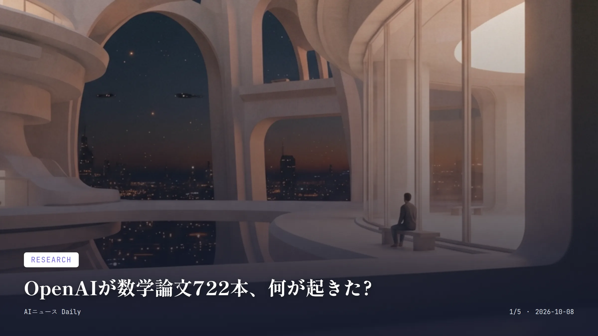

これは2026-10-08時点のアーカイブページです。最新のニュースはこちら
本サイトはアフィリエイトプログラムによる収益を得ている場合があります。
本サイトはGoogle AdSense等の広告配信サービスを利用しています。
目次

Research
約2分で読める
OpenAIが数学論文722本、何が起きた?
未解決問題に挑む内部AI、査読なき公開に波紋
722本 公開された数学論文の数
372 成果ファミリー数
約4,000問 モデルに与えられた問題数
2026年10月6日 GitHub公開日
OpenAIが10月6日、社内で動かしていた未公開のフロンティアモデルによる数学論文722本を、GitHubでまるごと無料公開した。372の「成果ファミリー」に分かれていて、数論・代数・幾何まで、未解決問題への挑戦結果がずらりと並ぶ。
評価の過程でモデルに投げられた問題は約4,000問。採用された結果1件につき、ChatGPT Pro換算でだいたい3時間の計算時間がかかったという。Leanによる形式検証が付いているものが多いが、未検証のまま残っている結果もある。
ただ、この発表の仕方には批判も出ている。リポジトリはOpenAI自身のアカウント上にあり、モデル名もプロンプトも明かされていない。詳しい推論過程の要約が付くのは722本中わずか10本だけ。独立した検証を経ていない主張も多く、数学界では成果の真偽をめぐる議論がくすぶっている。
なぜ重要か 査読を経ないAI生成論文がこれだけの量で一気に数学界に投げ込まれたのは異例で、研究成果をどう検証するか、学術ルールをどう考え直すかという問いを突きつけている。日本ではまだ同様の事例はないが、生成AIが基礎研究の最前線に入り込む流れは、いずれ国内の大学・研究機関にも波及しそうだ。
AI Safety
約1分で読める
10代のChatGPT利用、1日15分未満の実態
OpenAI初の利用データ公表、安全性評価は対立
15分未満 10代の1日平均利用時間
2%未満 3時間超連続利用する利用者の割合
4,000件超 Common Sense Mediaが検証したプロンプト数
OpenAIが10月7日、10代向け「ChatGPT for Teens」について初めて利用実態をまとめたレポートを出した。平均利用時間は1日15分未満で、3時間以上ぶっ続けで使う人は2%未満だという。
ところが同じ日、非営利団体Common Sense MediaのYouth AI Safety Instituteは、このChatGPT for Teensを最も厳しい「容認できないリスク」と評価する報告書を発表した。4,000件超のプロンプトで検証したところ、自殺や自傷、摂食障害に関する会話で危機相談窓口をきちんと案内しない事例があったという。
OpenAIはこの検証について、実際の安全機能の働き方を正しく反映していないと反論。一方で、保護者アカウントとの連携や安全通知の有効化には時間がかかる場合があるとも説明している。
なぜ重要か 開発企業側の「利用は短時間」というデータと、外部機関の「容認できないリスク」という評価が真っ向からぶつかったのが興味深い。日本でも10代のチャットボット利用は広がっているはずだが、公的な実態データはまだ乏しく、海外のこの議論は保護者や学校が注意すべき論点を先取りしている。
Infrastructure
約1分で読める
Anthropicに600億ドル融資、過去最大規模に
半導体リース費用を調達、銀行団が販売開始
600億ドル 総調達額
420億ドル 優先担保付きトランシェ
180億ドル 劣後トランシェ
2026年10月6日 販売開始日
バンク・オブ・アメリカ、シティグループ、モルガン・スタンレーの米銀3行が10月6日、Anthropicの半導体リース費用を賄うため、総額600億ドルの債務を他の金融機関に売り始めた。英Financial Timesが関係者の話として報じている。
内訳はBroadcomの信用力を使った優先担保付きトランシェが420億ドル、劣後トランシェが180億ドル。劣後部分のうち約90億ドルはBlackstoneが引き受ける見通しだという。
この資金は2027年に納入予定の半導体リース費用に回り、支払いは納入後にスタートする。劣後債務を投資家向けに売るのは、Anthropicが計画するIPOが終わるまで見送られる可能性があるそうだ。
なぜ重要か AI向け半導体の調達コストが、ウォール街の債券市場を巻き込むほどの規模に膨らんでいることを物語る事例で、チップ関連融資としては過去最大級とされる。日本では同規模のAIインフラ向けシンジケートローンはまだ珍しいが、国内の銀行や年金基金がこうした米国発のAI金融商品に投資する機会は今後増えそうだ。
Business
約2分で読める
マクドナルドのAI価格ツールに独禁法訴訟
店舗ごとに価格差、消費者が集団訴訟を提起
10年以上 AI価格設定ツールの使用期間
2026年10月6日 提訴が報じられた日
米マクドナルドが、店舗ごとの値付けを手伝うAIツールをめぐり、独占禁止法違反の疑いで連邦地裁に訴えられた。訴状によれば、このツールは本来共有されないはずの非公開売上データをフランチャイズ加盟店間で共有し、近隣競合店の価格まで参照しているという。
きっかけはイリノイ州デカルブの消費者が、クォーターパウンダーなどの値段が店舗ごとに違うことに気づいたこと。10月2日（金曜）に訴訟が起こされ、訴状では「生活に余裕のない顧客を狙ったアルゴリズムによる価格協調だ」と主張している。
マクドナルド側は声明で「AIがメニュー価格を決めているわけではない、決めるのはフランチャイズ加盟店だ」と反論した。提供しているのはあくまで加盟店の判断を助ける任意のツールで、価格の自動化も協調もしていないという。このAI強化型の価格設定ツール自体は10年以上使っているとのことだ。
なぜ重要か AIによる値付けが「見えない価格差別」につながるのではという懸念が米国で広がりつつあり、同じような提訴は他の小売・外食チェーンにも飛び火しかねない。日本ではまだAIによる店舗別の個別最適化価格は一般的ではないが、ダイナミックプライシングが広がれば、同じような公正性の議論が出てくる可能性はある。
Research
約2分で読める
仏Mistral、1兆パラメータの新AI発表
オープンウェイトは月末公開、100万トークン対応
約1兆500億 総パラメータ数
490億 アクティブパラメータ数
約3,800基 学習に使用したGPU数
2026年10月末 オープンウェイト公開予定
フランスのAIスタートアップMistral AIが10月6日、新しい主力モデル「Mistral Large 4」（愛称Le Chonk）のパブリックプレビューを公開した。総パラメータ数は約1兆500億、実際に動く「アクティブパラメータ」は490億で、画像入力にも対応するマルチモーダルのMoE（混合エキスパート）モデルだという。
学習には自社の欧州データセンターでNVIDIAのGrace Blackwell GPUを約3,800基使用し、コンテキストウィンドウは100万トークンに達する。オープンウェイトの公開は10月末を予定していて、今のところAPI経由でしか使えない。
中国勢のオープンウェイトモデルが存在感を増す中、Mistralは「中国以外で作られた最強のオープンウェイトモデル」という立ち位置を打ち出す。欧州の銀行や政府機関が自前のサーバーでデータを域内に保ったまま使える点を、強みとして打ち出している。
なぜ重要か 巨大モデルの開発競争が米国・中国企業に偏りがちな中、欧州発のMistralが独自路線で対抗している点が興味深い。日本には同規模の国産フロンティアモデルを単独開発する企業はまだなく、海外モデルへの依存をどう減らすかという『AI主権』の議論は、いずれ日本にも避けて通れない話になりそうだ。
先頭に戻る